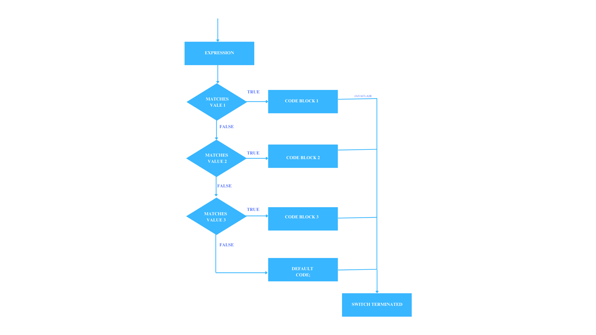
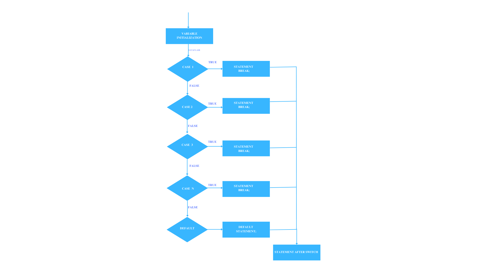

Java Switch Statement
Introduction to switch statement
The switch statement is a control statement that allows you to execute one block of code among multiple choices based on the value of a variable. It is particularly useful when you have a fixed set of possible values for a variable. Using a switch statement can make your code cleaner and easier to read compared to a series of if-else statements.
When to Use a Switch Statement
- When you need to evaluate a single expression against multiple constant values.
- When the possible values are discrete and known (like days of the week, menu options, etc.).
- When you want to improve code readability and maintainability by avoiding lengthy if-else chains.
Syntax
The syntax of the switch statement is as follows:
switch (expression) {
case value1:
// code to execute if expression matches value1
break;
case value2:
// code to execute if expression matches value2
break;
// more cases can be added
default:
// code to execute if expression doesn't match any case
}- expression: The variable or expression you want to evaluate.
- case: Each case represents a possible value of the expression. If it matches, the associated code block will execute.
- default: This block executes if none of the cases match the expression. It's like a fallback option for invalid or unexpected values.

Example: Day of the Week
Here's an example program that uses a switch statement to print the name of the day based on an integer input representing the day of the week (1 for Monday, 2 for Tuesday, etc.):
import java.util.Scanner;
public class DayOfWeek {
public static void main(String[] args) {
Scanner scanner = new Scanner(System.in);
System.out.print("Enter a number (1-7) for the day of the week: ");
int day = scanner.nextInt();
switch (day) {
case 1:
System.out.println("Monday");
break;
case 2:
System.out.println("Tuesday");
break;
case 3:
System.out.println("Wednesday");
break;
case 4:
System.out.println("Thursday");
break;
case 5:
System.out.println("Friday");
break;
case 6:
System.out.println("Saturday");
break;
case 7:
System.out.println("Sunday");
break;
default:
System.out.println("Invalid day! Please enter a number between 1 and 7.");
}
scanner.close();
}
}- Input: The program prompts the user to enter a number between 1 and 7.
- Switch Statement: The entered number is evaluated against the cases.
- If the user enters 1, it outputs "Monday".
- If 4 is entered, it outputs "Thursday".
- If an invalid number (not between 1 and 7) is entered, it executes the default case, informing the user of the invalid input.
- Break Statement:The break statement is crucial in the switch case. It prevents the execution from falling through to the next case, even if that next case does not match the expression. Without a break, the code will continue executing subsequent cases, even if they do not match, leading to unintended behavior. This is known as fall-through.
- Default Case: The default case is like the "catch-all" option. It runs if none of the specified cases match the expression. For example, if the user enters an invalid number for the day (like 8 or -1), the default case will handle it and print an error message. While the default case is optional, it is a good practice to include it, especially when handling user input, to account for unexpected values.
Key Points to Remember
- Fall-through Behavior: If you omit the break statement, the program will execute all subsequent cases until it encounters a break or the end of the switch block. This can be useful for grouping multiple cases together:
switch (day) {
case 1:
case 2:
case 3:
System.out.println("It's a weekday!");
break;
case 4:
case 5:
System.out.println("Almost the weekend!");
break;
case 6:
case 7:
System.out.println("It's the weekend!");
break;
default:
System.out.println("Invalid day!");
}- int
- char
- String (from Java 7 onwards)
- enum types
Please click on the 'Run' button to view the output.
Nested Switch Statements
A nested switch is simply a switch statement inside another switch. This technique is useful when you need to make further decisions within each case of a switch. However, using nested switches can make the code more complex, so it's important to use them judiciously to keep the code readable.
Syntax:
switch (variable1) {
case value1:
// Code to execute if variable1 equals value1
switch (variable2) {
case valueA:
// Code to execute if variable1 equals value1 and variable2 equals valueA
break;
case valueB:
// Code to execute if variable1 equals value1 and variable2 equals valueB
break;
// Additional cases for variable2
default:
// Code to execute if variable1 equals value1 but no cases match for variable2
}
break;
case value2:
// Code to execute if variable1 equals value2
switch (variable3) {
case valueX:
// Code to execute if variable1 equals value2 and variable3 equals valueX
break;
case valueY:
// Code to execute if variable1 equals value2 and variable3 equals valueY
break;
// Additional cases for variable3
default:
// Code to execute if variable1 equals value2 but no cases match for variable3
}
break;
// Additional cases for variable1
default:
// Code to execute if no cases match for variable1
}- Variables and Control Flow:The request was to explain how the program uses two variables (variable1 and variable2/variable3) to control which blocks of code are executed in the nested switch structure.
- Outer and Inner Switch Statements:A clear explanation was needed to show how the outer switch decides the flow based on variable1, while the inner switch makes further decisions using variable2 or variable3.
- Break Statement:The request sought a description of the break statement's importance in preventing fall-through and ensuring correct execution of the code.
- Default Case: This is used to explain the purpose of the default case in handling unexpected values for both the outer and inner switches.

switch (category) {
case 1:
System.out.println("Category: Fruit");
switch (item) {
case 1:
System.out.println("Item: Apple");
break;
case 2:
System.out.println("Item: Banana");
break;
}
break;
case 2:
System.out.println("Category: Vegetable");
switch (item) {
case 1:
System.out.println("Item: Carrot");
break;
case 2:
System.out.println("Item: Broccoli");
break;
}
break;
}- Outer Switch Statement (switch (category)):
- The outer switch checks the value of category to determine whether it is 1 or 2.
- case 1 corresponds to the "Fruit" category.
- case 2 corresponds to the "Vegetable" category.
- Case 1: Category is Fruit:
- If category is 1, it enters case 1 and prints "Category: Fruit".
- Then, it checks the item using the inner switch.
- If item is 1, it prints "Item: Apple".
- If item is 2, it prints "Item: Banana".
- The break statements ensure the program exits the inner switch block after a match is found.
- Case 2: Category is Vegetable:
- If category is 2, it enters case 2 and prints "Category: Vegetable".
- Then, it checks the item in the inner switch:
- If item is 1, it prints "Item: Carrot".
- If item is 2, it prints "Item: Broccoli".
- Like in case 1, break statements are used to exit the inner switch after the item is matched and printed.
Please click on the 'Run' button to view the output.
Ready to Practice?
Design a Java program that takes an integer input from 1 to 3, representing the colors of a traffic light:
- Red
- Yellow
- Green
Use a switch statement to display the meaning of each light.